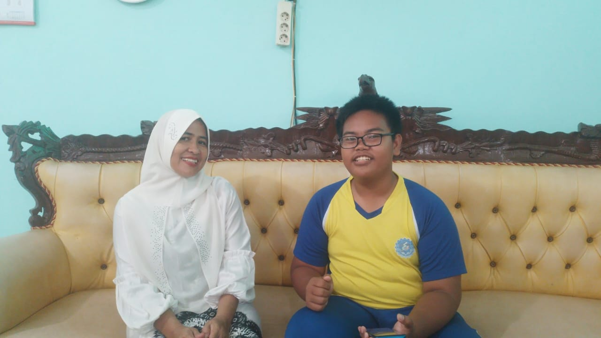
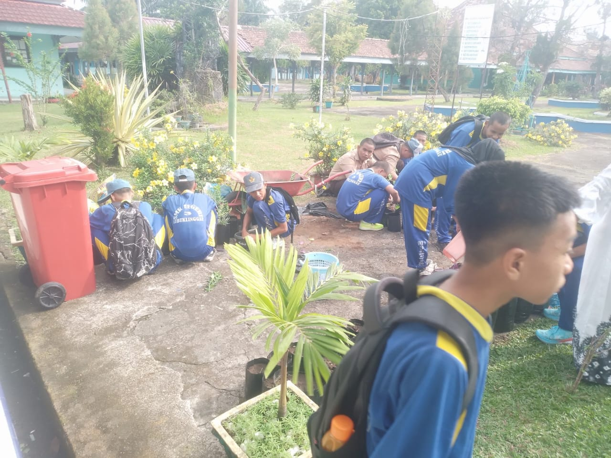
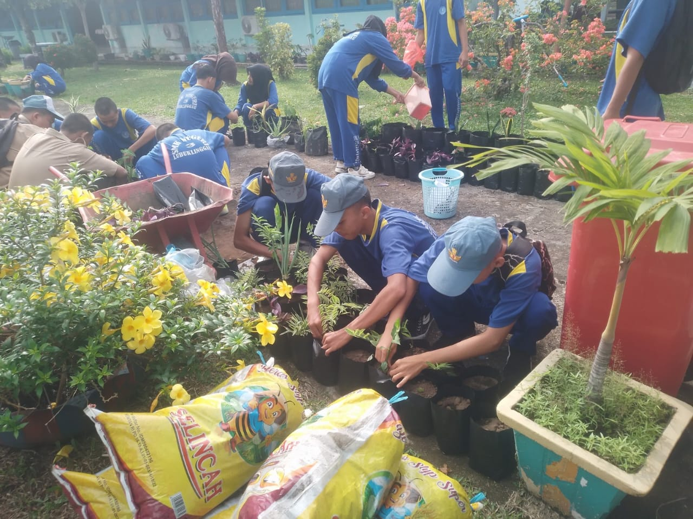

Jumat Bersih, Siswa SMKN 3 Lubuklinggau Tanam Tanaman Hias

Lubuklinggau — Jumat, 20 November 2026, SMKN 3 Lubuklinggau menggelar Jumat Bersih. Selain membersihkan area sekolah, siswa dan siswi juga menanam tanaman hias di depan ruang tamu. Kegiatan ini jadi salah satu cara sekolah menambah tanaman dan membuat halaman lebih hijau serta nyaman.
Dari wawancara dengan Apriana Suzanti, S.Pd., penanaman dilakukan memakai polybag. Siswa bekerja bersama: menyiapkan tanah, menaruh pupuk, menanam, lalu menyiram agar tanaman bisa tumbuh baik.
Kerja Sama Siswa Jadi Kunci
Supaya cepat dan rapi, siswa membagi tugas. Ada yang mengisi tanah ke polybag, ada yang menambahkan pupuk, menanam bibit, dan menyiram. Setiap orang punya peran, jadi semuanya ikut bergerak.
Menurut Apriana Suzanti, S.Pd., ide ini datang dari Kepala SMKN 3 Lubuklinggau, Suhar Jendro, S.Pd., M.Pd. Penanaman tidak cuma di depan ruang tamu, tapi juga bagian dari upaya penghijauan di beberapa titik sekolah.


Lingkungan Sekolah yang Lebih Asri
Jumat Bersih kali ini menunjukkan bahwa kepedulian terhadap lingkungan bisa dimulai dari hal kecil yang dikerjakan bersama. Dengan pembagian tugas dan semangat gotong royong, proses penanaman berjalan lebih efektif.
Harapannya, tanaman yang sudah ditanam terus dirawat. Lingkungan sekolah yang hijau dan tertata bisa membuat suasana lebih nyaman bagi seluruh warga SMKN 3 Lubuklinggau.
FAKTA KEGIATAN · 5W + 1H
- Apa: Jumat Bersih dan penanaman tanaman hias serta tanaman lainnya.
- Siapa: Siswa dan siswi SMKN 3 Lubuklinggau; diusulkan oleh Kepala Sekolah, Suhar Jendro, S.Pd., M.Pd.
- Kapan: Jumat, 20 November 2026.
- Di mana: Area depan ruang tamu sekolah; tanaman ditanam memakai polybag.
- Mengapa: Mengembangbiakkan tanaman dan melakukan penghijauan agar lingkungan sekolah lebih asri dan segar.
- Bagaimana: Siswa membagi tugas mengisi tanah, menambahkan pupuk, menanam, dan menyiram.